Planning
Brief description of the domain and problem
The domain is the medical domain. The client does not know anything about computers. The client is the NPO GoodPeople which created the VaxTodo initiative, which vaccinates adults against COVID-19.
The problem is that the client has more and more problems meeting appointment dates and following up within an acceptable time frame. Our task is to create a system that will guarantee the periods of appointments booked and to facilitate the follow-up.
Prioritization
Assignment 1:
We first prioritized text analysis, client interviews and glossary in order to fully understand the area and the problem. Next, we prioritized the use case diagram in order to have a good basis for writing scenarios. Subsequently, we prioritized the writing of the scenarios. Then we worked on the analysis of risks and non-functional needs. Subsequently, we worked on the paper prototype and the Java prototype. Finally, we have completed the report.
Assignment 2:
As with assignment 1, we first prioritized the analysis of the text in order to fully understand the problem. We then prioritized the analysis and correction of our Assignment 1, to ensure we were on the right track. Subsequently, we prioritized the design of the diagrams, in order to have a good understanding of how we were going to implement the system. It might have been easier to start with the activity diagram, but we started with the class diagram. We still worked on prototype at the same time prioritizing the design of classes, attributes, getters, setters and other methods without writing the methods in detail. After completing the diagrams, we worked on the prototype and wrote the material requirements, physical and conceptual requirements, and report.
Assignment 3:
As with homework 1 and 2, we first prioritized the analysis of the text in order to fully understand the problem. We then prioritized the analysis and correction of our assignment 2, to ensure we were on the right track. Subsequently, we prioritized the VaxToDo application, to ensure that we did not have to modify the diagrams, README and report several times. Then we did the tests, and then we finalized the README, the report, and the diagrams.
Exchanges with the client
We had two meetings with the client. Before our first meeting, the client had already answered some questions from other developers.
At our first meeting, we asked four questions:
- Are there any features you absolutely don't want to have?
- The client has indicated that it does not wish to share vaccination data with any other authority.
- What are your particular constraints regarding data storage, privacy (confidential medical information), etc.?
- The client indicated that, for now, he wants to store the data on a computer at GoodPeople serving as a server, storing all the data at GoodPeople. The recordings will be stored on a text file on disk. Eventually, the client wants to migrate to a more robust solution.
- Are there any potential risks you see (security of confidential data, vaccination, etc.)?
- The client has indicated that they want us to analyze these risks and offer solutions.
- What is your strategy after launching the system (maintenance, support, feature additions, etc.)?
- The client indicated that it eventually wants to migrate to a more robust solution for data storage and possibly migrate from a command-line system to a system with a graphical interface.
- We see potential risks with the data storage system. We understand that your budget is limited and that this solution is the best possible for the current budget. However, it would be important to ensure that the computer serving as a server is secure. It is important not to place the server in the same room as other computers. Is there a place where the computer could be placed where use could be restricted? For example, a room used only for the server and well secured, which unauthorized employees could not access? It must be ensured that the identity documents of anyone wishing to access it are verified, for example by an ID card in addition to physical keys.
- The client replied: You may be right, the server should be physically protected/isolated. If possible we would like to avoid having to resort to the consultant again. Our room has only one large room. Can you describe a simple solution?
One solution to this problem would be to keep the server locked, with only a few authorized employees having access to the key and ensuring that only certain employees have access to the server's system. This can be ensured with their 9-digit employee code, their usual password, as well as an additional password known by authorized employees to access the server.
Presentation of hypotheses
It is assumed that the data saved on the server must have a backup.
It is assumed that the full functionality of the system must operate continuously during working hours.
Understanding the domain
After many meetings and familiarization with the VaxTodo activity, we have prepared a glossary gathering the key terms and expressions characterizing the environment.
Glossary
- Employee
- The employee is a member of the team working for VAX:TODO, he takes care of the appointment, visitors as well as their account and volunteers. Identified by surname, first name, address, telephone number, email address, 9-digit employee code and password.
- Volunteer
- The volunteer is a team member working for VAX:TODO. He takes care of the reception of visitors and transports visitors to employees. It cannot access the system. Identified by surname, first name, address, telephone number and email address.
- Visitor
- A "client" of VAX:TODO. It can be a visitor with appointment or a spontaneous visitor (no appointment).
Synonym: Person - Appointment
- Appointment for the visit of a vaccine. Must be taken 72 hours in advance.
Synonym: Reservation (reservation for the appointment) - Reservation number
- Unique product number when booking an appointment
- System
- "Software" used by employees for the management of appointments, employees and visitors.
- Vaccine
- The main objective of VAX:TODO, to allocate vaccines. Identified by name, code and batch. Four types: Pfizer, Moderna, AstraZeneca, Jenssen.
Synonym: Vaccination - Server
- Where the data will be stored. For now the server is on a computer in the room.
- Account
- One account per visitor, containing all the necessary information about it.
Synonym: Folder - Phantom account
- Unused account. These accounts should be avoided.
- Unique twelve-digit number
- Unique number attached to a visitor's account.
Synonym: Account number - Email address
- Unique to each visitor, volunteer and employee, registered in the visitor's account.
- Personal information
- Surname, first name, date of birth address and telephone number of the visitor, registered in the visitor's account.
Synonym: Data - Health insurance card number
- Unique number of any person registered in the Québec health care system. Requested when confirming the appointment.
- Vaccination report
- Report containing the details of each vaccination. Can optionally be sent by email to the visitor concerned.
- Vaccination profile
- Profile that gathers information related to vaccines received for each visitor account telling: dose type, vaccine identification, date and time of vaccination.
- 9-digit employee code
- Unique identifier for each employee to access the system
- Password
- A series of characters unique to each employee that allows authentication to access the system. Composed of at least 8 characters containing at least 1 number, 1 uppercase, 1 lowercase and 1 special character.
- Healthcare Professional
- People who give the vaccines. They are not part of the GoodPeople team. Goodpeople only takes care of reserving them a space in the room.
Synonym: Vaccinators, chargers, injectors - Local
- Where vaccines are given. Maximum capacity of 40 people, excluding health professionals and the team.
- Planned visit
- Visit by a visitor to GoodPeople for vaccination, whose visit was planned in advance by making an appointment.
- Spontaneous visit
- Visit by a visitor to GoodPeople for vaccination, whose visit is spontaneous by presenting himself on site, without an appointment made in advance.
- Questionnaire
- Paper form given to visitors containing necessary information related to the client.
- Proof of vaccination
- A PDF containing all the information of the vaccine that the visitor has received. It is sent by email within the next 48 hours by the employee.
Synonym: Vaccination Report, Vaccination Profile - QR code
- Matrix barcode unique to the vaccinated visitor sent with proof of vaccination.
- Calendar
- The calendar indicates the possible availability for a new appointment and indicates each appointment.
- Dose
- A unit of vaccine administered at a particular time. There are two doses. The second dose shall be given at least one month after the first dose.
- Team
- A group of people working at GoodPeople made up of employees and volunteers.
- Calendar
- File where the appointments booked are grouped with their date and time, the full name of the visitor and the reservation number.
- Appointment confirmation
- Message sent by email to the visitor in order to confirm that the information of the appointment.
- Processing of the file
- Create, edit, and delete visitor profiles, associated appointments, vaccination profiles, and appointment confirmations.
Domain Modeling
Use case

Scenarios
-
Use Case: Appointment
Creation Purpose: A person wishes to make an appointment to be vaccinated at GoodPeople
Preconditions: The employee has an account authorizing him to make appointment reservations.
Cast: Person (main), Employee (secondary)
Main script
- A person calls GoodPeople to make an appointment to get vaccinated.
- The employee asks the person for the date and time they want to make the appointment.
- The employee checks whether this time slot is valid or available in the calendar.
- The employee asks for his information (surname, first name, type of dose, email).
- The system confirms the appointment booking.
Alternative scenarios
- 3a. The time slot desired by the client is not available.
- 3a.1 The employee shall ask the person for another date and time. He can suggest one close to the one he just said just before.
- 3a.2 The scenario resumes in Step 3.
- 9a. The date given by the person is in less than 72 hours.
- 9b.1 The employee shall ask the person for another date and time that is more than 72 hours away.
- 9b.2 The scenario resumes in Step 3.
Postconditions: Details containing the first name, last name, booking number, dose type, as well as the date and time of the appointment are saved. These details are emailed to the individual. -
Use Case: Appointment
Modification Purpose: To allow a person to change their appointment to get vaccinated at GoodPeople.
Preconditions: The employee has an account authorizing him to modify appointment reservations.
Cast: Visitor (main), Employee (secondary)
Main script
- A visitor contacts GoodPeople by phone to change their appointment
- The employee asks the visitor for their reservation number, full name, dose type, and the date and time of their new appointment.
- The visitor provides this information.
- The employee checks whether this time slot is valid or available in the calendar.
- The employee confirms the request with the visitor.
- The visitor confirms that he wishes to change his appointment.
- The main menu of the system prompts to choose an option.
- The employee chooses "List of appointments".
- The system displays the list of appointments and prompts to choose an option.
- The employee verifies that the appointment is present in the list.
- The employee chooses "Modification".
- The system prompts you to choose the appointment to change.
- The employee chooses the appointment to be changed.
- The system displays the data entered in the appointment and prompts to confirm the change.
- The employee changes the information entered with the information provided by the visitor.
- The employee chooses "Edit".
- The system changes the appointment.
- The system displays the change confirmation.
Alternative scenarios
- 3a. The time slot desired by the client is not available.
- 3a.1 The employee shall ask the person for another date and time. He can suggest one close to the one he just said just before.
- 3a.2 The scenario resumes in Step 3.
- 10a. The appointment is not present in the list.
- 10a.1 The employee asks the person to repeat their account information (booking number, full name, date and time of their appointment) checking that there are no errors.
- 10a.2 If the new information is present in the "Appointment List", the scenario resumes in step 10.
- 10a.3 If the new information is still not present in the "Appointment List", the employee invites the visitor to create a new appointment.
- 14a. The visitor does not want to change the appointment (no valid date for the next appointment or distant date in the future, etc.)
- 14a.1 The employee confirms to the user that the appointment will not be changed.
- 14a.2 The scenario ends.
- 16a. The employee chooses "Do not modify".
- 16a.1 The employee confirms to the user that the appointment will not be changed.
- 16a.2 The scenario resumes in Step 16.
Postconditions: The appointment is changed. A confirmation message of the new appointment is sent by email to the visitor. -
Use Case: Appointment
Deletion Purpose: Allow a person to cancel their appointment to get vaccinated at GoodPeople
Preconditions: The employee has an account authorizing them to cancel appointment reservations.
Cast: Visitor (main), Employee (secondary)
Main script
- A visitor contacts GoodPeople to cancel their appointment to get vaccinated.
- The employee asks the visitor for his name, as well as the date and time of his appointment.
- The visitor indicates this information.
- The employee confirms the request with the visitor.
- The visitor confirms that he wishes the cancellation of his appointment.
- The main menu of the system prompts to choose an option.
- The employee chooses "List of appointments".
- The system displays the list of appointments and prompts to choose an option.
- The employee verifies that the appointment is present in the list.
- The employee chooses "Delete".
- The system prompts you to choose the appointment to delete.
- The employee chooses the appointment to delete.
- The system displays the data entered in the appointment and prompts to confirm the deletion.
- The employee chooses "Delete".
- The system deletes the appointment.
- The system displays the deletion confirmation.
Alternative scenarios
- 8a. The visitor changes his mind and does not want to cancel the appointment.
- 8a.1 The employee confirms to the user that the appointment will not be deleted.
- 8a.2 The scenario ends.
- 9a. The appointment is not present in the list.
- 9a.1 The employee shall ask the person to repeat his or her name and the date and time of his or her appointment, verifying that there are no errors.
- 9a.2 The scenario resumes in Step 3.
- 14a. The employee chooses "Do not delete".
- 14a.1 The scenario resumes in Step 8.
Postconditions: The appointment is deleted. A confirmation message of the cancellation of the appointment is sent by email to the visitor. -
Use Case: Appointment
Confirmation Purpose: Allow the employee to send an appointment confirmation Preconditions
: The employee has an account that allows them to access and edit visitor account information.
Actors: Employee (main), Visitor (secondary)
Main scenario
- When creating, editing, or deleting an appointment, the employee has the option to check or uncheck a "Sent confirmation" checkbox in the appointment menu. The check box is selected by default.
- For any future modification or deletion of the appointment and as long as the box "Send a confirmation during an update" is checked, a confirmation will be automatically sent to the visitor.
- The employee decides to send a manual confirmation using a "Send confirmation now" button located near the check box.
- The system displays a preview of the email that will be sent and asks for confirmation of the sending.
- The employee agrees by pressing "Send it as is to the visitor [reservation number, full name]".
- The system sends an email to the visitor detailing the information of his account as well as the status of the confirmation (automatic update, manual deletion of the account by such employee, etc.).
- The system displays the confirmation of the sending of the email.
Alternative scenarios
- 4a. The employee chooses "Do not send".
- 4a.1 The scenario resumes in Step 3.
- 7a. Shipment fails
- 7a.1 The system displays that the shipment ended in failure and displays the error code.
- 7a.2 The scenario resumes in Step 4.
Postconditions: A confirmation email is sent to the visitor reminding them of the status of their appointment (added, modified or cancelled). -
Use Case: Creating a Volunteer
Account Purpose: A volunteer wants to help GoodPeople and participates in the vaccination campaign as a volunteer.
Preconditions: The employee has an account authorizing him to create volunteers in the system
Actors: Volunteer (primary), Employee (secondary)
Main scenario
- A volunteer comes to the reception indicating that he wants to be a volunteer.
- He is redirected to an employee to create an account for him.
- The employee asks for his information (surname, first name, email, address, telephone number, as well as his availability to come to the premises).
- The system validates the information.
- The system confirms the creation of the volunteer's account.
Alternative scenarios
- The system rejects the client's email, because there is already an account with this address
- 4a.1 The system asks the employee to enter a new email
- 4a.2 The scenario resumes in Step 5
Postconditions: The volunteer is saved in the system. -
Use Case: Modifying a Volunteer
Account Purpose: Allowing the Modification of a Volunteer
Account Information Preconditions: The employee has an account authorizing him to modify the volunteer accounts in the system
Actors: Volunteer (primary), Employee (secondary)
Main scenario
- The main menu of the system prompts to choose an option.
- The employee chosen "List of volunteers".
- The system displays the list of volunteers and prompts for an option.
- The employee chooses "Modification".
- The system prompts you to choose the volunteer to edit.
- The employee chooses the volunteer to modify.
- The system displays the volunteer's data and prompts to confirm the change.
- The employee replaces the registered information with the information provided by the volunteer.
- The employee chooses "Edit".
- The system changes the volunteer's information.
- The system displays the change confirmation.
Alternative scenarios
- 8a. Volunteer does not want to change account information
- 8a.1 The employee confirms to the volunteer that his/her account information will not be changed.
- 8a.2 The scenario ends.
- 4a. The information provided is not present in the list.
- 4a.1 The employee shall ask the volunteer to repeat his or her account information, verifying that there are no errors.
- 4a.2 If the new information is present in the "Volunteer List", the scenario resumes in step 4.
- 4a.3 If the new information is still not present in the "Volunteer List", the employee invites the volunteer to create a new account.
- 9a. The employee chooses "Do not modify".
- 9a.1 The employee confirms to the volunteer that the information will not be changed.
- 9a.2 The scenario resumes in Step 9.
Postconditions: The volunteer's information is changed. -
Use Case: Deleting a Volunteer
Account Purpose: A volunteer can be deleted if they stop collaborating with VaxTodo
Preconditions: The employee has an account authorizing them to delete a volunteer's account. The volunteer stops collaborating with VaxTodo.
Cast: Volunteer (main), Employee (secondary)
Main script
- The main menu of the system prompts to choose an option.
- The employee chosen "List of volunteers".
- The system displays the list of volunteers and prompts for an option.
- The employee chooses "Delete".
- The system prompts you to choose the volunteer to delete.
- The employee chooses the volunteer to delete.
- The system displays the volunteer's data and prompts to confirm the deletion.
- The employee chooses "Delete".
- The system removes the volunteer.
- The system displays the deletion confirmation.
Alternative scenarios
- 5a. The employee chooses "Do not delete".
- 5a.1 The scenario resumes in Step 3.
Postconditions: The volunteer is deleted. -
Use case: Creation of a Visitor
account Purpose: A person who comes to be vaccinated must have an account.
Preconditions: The employee has an account authorizing him to create the account of a visitor who comes to be vaccinated. The person went through the queue and was called by an employee.
Cast: Visitor (main), Employee (secondary)
Main script
- The visitor presents himself at the employee's office
- The employee confirms his appointment with his name and the time of the visit.
- The employee then asks for his personal information (surname, first name, address, telephone number, email, date of birth)
- The employee enters the information into the system
- The system validates the information
- The system confirms the creation of the account and displays the unique number of the account.
- The agent communicates the unique number of his account.
Alternative scenarios
- 5a. The system rejects the client's email, because there is already an account with this address
Postconditions: The visitor's account is saved. -
Use Case: Modifying a Visitor
Account Purpose: Allowing the modification of a visitor
account information Preconditions: The employee has an account authorizing him to delete a visitor's account. If the visitor requests a change to their account in person, they have gone through the queue and been called by an employee.
Cast: Visitor (main), Employee (secondary)
Main script
- The visitor contacts VaxTodo by email, phone or in person and requests the modification of his account.
- The employee confirms the request with the visitor.
- The visitor confirms that he wishes to change his account.
- The main menu of the system prompts to choose an option.
- The employee chooses "List of Visitor Accounts".
- The system displays the list of accounts and prompts to choose an option.
- The employee chooses "Modification".
- The system prompts to choose the account to be modified.
- The employee chooses the account to change.
- The system displays the data entered in the account and prompts to confirm the change.
- The employee replaces the account information with the information provided by the visitor.
- The employee chooses "Edit".
- The system changes the account information.
- The system displays the change confirmation.
Alternative scenarios
- 3a. The visitor does not want to change their account information
- 3a.1 The employee confirms to the visitor that his account information will not be changed.
- 3a.2 The scenario ends.
- 6a. The information provided is not present in the list.
- 6a.1 The employee asks the visitor to repeat his account information by checking that there are no errors.
- 6a.2 If the new information is present in the "Visitor Account List", the scenario resumes in step 6.
- 6a.3 If the new information is still not present in the "Visitor Account List", the employee invites the visitor to create a new account.
- 12a. The employee chooses "Do not modify".
- 12a.1 The employee confirms to the visitor that the information will not be changed.
- 12a.2 The scenario resumes in Step 12.
Postconditions: The visitor's account information is changed. -
Use Case: Deleting a Visitor
Account Purpose: A visitor's account can be deleted at the visitor's request.
Preconditions: The employee has an account authorizing him to delete a visitor's account. If the visitor requests the deletion of their account in person, they have gone through the queue and been called by an employee.
Cast: Visitor (main), Employee (secondary)
Main script
- The visitor contacts VaxTodo by email, phone or in person and requests the deletion of his account.
- The employee confirms the request with the visitor and tells him that the deletion is final.
- The visitor confirms that he wishes to delete his account.
- The main menu of the system prompts to choose an option.
- The employee chooses "List of Visitor Accounts".
- The system displays the list of accounts and prompts to choose an option.
- The employee chooses "Delete".
- The system prompts to choose the account to delete.
- The employee chooses the account to delete.
- The system displays the data entered in the account and prompts to confirm the deletion.
- The employee chooses "Delete".
- The system deletes the account.
- The system displays the deletion confirmation.
Alternative scenarios
- 3a. The visitor changes his mind and does not want to delete the account.
- 3a.1 The employee confirms to the user that the account will not be deleted.
- 3a.2 The scenario ends.
- 11a. The employee chooses "Do not delete".
- 11a.1 The scenario resumes in Step 6.
Postconditions: The visitor's account is deleted. -
Use Case: Vaccination
Tracking Purpose: The purpose of vaccination tracking is to email the vaccination report to the visitor and remind them of the date of their next appointment if applicable.
Preconditions: The employee has an account to send the follow-up to the visitor. The employee holds the visitor's information.
Cast: Visitor (main), Employee (secondary)
Main script
- The visitor has just been vaccinated and leaves the premises.
- The employee selects the visitor's account
- Employee selects option to send email notification
- The system displays a confirmation that the package leaflet has been sent.
Alternative scenarios
- 3a. The vaccination profile has not yet been created.
- 3a.1 The scenario ends.
Postconditions: A small sentence indicates on the visitor's profile that the follow-up was done on this account. -
Use Case: Interview and Questionnaire
Purpose: When a person shows up for their appointment, an employee asks for certain information.
Preconditions: The employee has an account that allows them to access and modify visitors' account information.
Actors: Person (main), Employee (secondary)
Main script
- A person in line for his appointment is called by the employee.
- The employee accesses the list of appointments in the system.
- The employee asks the person for the name and time of the appointment.
- The person indicates this information.
- The employee confirms the appointment.
- The employee is in the appointment-specific questionnaire from the list of appointments.
- The employee completes the questionnaire by asking the person for their surname, first name, the date of the visit and which vaccine they want to receive.
- The person indicates this information.
- The employee goes on to ask for her sickness card, writes down the number and asks if she has ever contracted COVID, if she has symptoms of COVID and if she has allergies.
- The person shows their health card and answers no to all these questions.
- The employee asks if she has ever received a first dose.
- The person says yes.
- The employee saves the questionnaire, gives the person a numbered ticket and directs them to the queue.
Alternative scenarios
- 5a. There is no scheduled appointment with this information.
- 5a.1 The employee invites the person to make an appointment.
- 5a.2 The scenario ends.
- 10a. The person does not have a valid health insurance card and/or answers yes to one or more of these questions.
- 10a.1 The employee informs the person that VaxTodo cannot vaccinate him or her and tells him or her to contact INFO-SANTÉ.
- 10a.2 The scenario ends.
Postconditions: The questionnaire is saved and sent to health professionals. -
Use Case: Adding a vaccination profile to a visitor's
account Purpose: Update a visitor's account after they have received the vaccine.
Preconditions: The employee has an account that allows them to access and modify visitors' account information.
Actors: Employee (main), Visitor (secondary)
Main scenario
- After the visitor has received their vaccine, the employee creates a vaccination profile that contains all the information related to the vaccines received (dose type, vaccine identification, date and time of vaccination).
- In the "List of Visitor Accounts" menu, the employee chooses the visitor in question.
- From the visitor's menu, the employee chooses the "Add a vaccination profile" option.
- The employee fills in the input fields with the vaccination information (account number, date, dose type, vaccine name, vaccine code, vaccine lot).
- The employee chooses to add the profile with "Save this profile".
- The system returns a confirmation of the profile backup.
- The employee chosen "Add".
- The system adds the profile and updates the visitor's account.
- The system sends an email confirmation to the visitor.
Alternative scenarios
- 2a. Visitor account information is not present in the list.
- 2a.1 The employee asks the visitor to repeat his account information checking that there are no errors.
- 2a.2 If the new information is present in the "Visitor Account List", the scenario resumes in step 2.
- 2a.3 If the new information is still not present in the "Visitor Account List", the employee invites the visitor to create a new account.
- 6a. The information entered by the employee is not in the correct format.
- 6a.1 The system indicates to correct the information entered.
- 6a.2 The scenario resumes in Step 4.
- 7a. The employee chooses "Do not add".
- 7a.1 The scenario resumes in Step 4.
Postconditions: The vaccination profile is added to the visitor's account. The visitor receives an email confirmation. -
Use Case: Check Calendar
Purpose: Check a day's calendar to see scheduled appointments.
Preconditions: The employee has an account authorizing him to access the appointment calendar.
Cast: Employee (main)
Main screenplay
- The employee selects the option to view the calendar
- The employee chooses the day for which he or she wishes to see the calendar.
- The calendar of the day is displayed with all bookings and times.
-
Use Case: Print Calendar
Purpose: Print the appointment calendar to give to volunteers.
Preconditions: The employee has an account authorizing him to access the appointment calendar.
Cast: Employee (main), Volunteer (secondary)
Main script
- Upon arrival in the morning, the employee selects the option to print the calendar.
- The employee chooses the number of copies to print.
- The employee is returned to the main menu.
- The employee then distributes copies of the calendar to the volunteers.
Analysis
Our preliminary analysis allowed us to analyze the risks and non-functional requirements of VaxxTodo:Re. It also allowed us to analyze the material needs and physical and conceptual constraints of VaxToDo:Re. Finally, it allowed us to analyze the behavior of the system using dynamic analysis models: activity diagrams.
Risks
Classification according to the severity of the risk.-
Risk of giving a dose of vaccine to a person who is not supposed to have one.
This risk is the most severe, as giving a dose of vaccine to a person who is allergic to the vaccine, is already infected with COVID, or giving one dose too many can cause very serious side effects or can even be fatal in the worst case. -
There could be a leak of confidential information of system users saved in the server, including medical data, if it was poorly secured.
This risk is severe, as highly confidential information, such as the date of vaccination, the type of vaccine and the number of visitors' health insurance card are saved. A leak could allow some to illegally obtain visitors' vaccination passports, steal their identities or harass them. -
Corruption of the text file stored on the server disk, containing all the system data, could cause permanent data loss.
This risk is severe, as all accounts, appointments, passwords, vaccination information, etc. would be lost. This would cause serious delays, cancellation or postponement of appointments and other problems. It could also cause some patients to not be able to access their vaccination passport. -
Improper use or saving of the questionnaire could result in a person being vaccinated with the wrong vaccine.
For example, if a bug caused a problem with the questionnaire data and the questionnaire received by healthcare professionals had the wrong type of vaccine selected. This risk is significant, as it could violate the visitor's fundamental right to choice of treatment. -
If vaccination information is poorly saved, visitors may not have access to their vaccination passport.
For example, if a bug caused a visitor's vaccination to be recorded as another visitor's vaccination or not recorded at all. This risk is significant because without a vaccine passport, a person would not be able to travel, access certain non-essential services or even work in some cases.
Non-functional requirements
- The interface should be intuitive and easy to interact with.
- The system must be used by multiple employees and the data must be available during multiple access.
- The system must be flexible for future changes such as supporting new specifications or commenting on the source code for ease of use by future new young programmers.
- Visitors' personal information must be kept secure.
- The employee code must be unique and have 9 digits.
- Employee passwords must be unique and be composed of minus 8 characters containing at least 1 digit, 1 uppercase, 1 lowercase and 1 special character.
- The full functionality of the system must be constantly functional during working hours.
- The system must comply with privacy laws and protect information from malicious actors.
- The documentation must be enlightened and easy to understand for the proper maintenance of the software in the future.
- The backed up data must remain intact. They should not be accidentally modified due to bugs.
- The system must run on a variety of work environments.
- The system must allow emails to be sent directly from the system.
- The system should not be heavy in terms of disk size and it should be easy to carry and install.
- The system should not be expensive to develop and maintain.
- The system must support different languages and localizations (French, English, etc.).
Material requirements
1. Party to be computerised
Since this is a small-volume application and the budget is limited, the best option is to use an interactive mode with on-site computers that will be used by employees. The part of appointment management (and calendar), account management of the volunteer and the visitor as well as the follow-up and vaccination report for each visitor will be computerized.
2. Necessary equipment
- Computers on site. Since this is a rather simple software that does not require too much power, computers do not necessarily have to be very powerful.
- Internal and external hard drives (optionally, to have copies).
- Printer to be able to print calendars. Since these are not images that require very high quality, a jet or laser printer will do the job. However, we will recommend a laser printer, as this would be much more economical in the long run (more printing with a single cartridge).
3. Storage solution
There will be a database that will save with the help of rows and columns all the important data and necessary for the use of the software.
The data will be stored in the src/Data/ folder in .csv format.
Everything will be saved on the hard drive of the computer and it will be possible to easily transfer the data to an external hard drive to have "back-ups".
Physical and conceptual constraints
There are a maximum of 15 visits per one-hour time slot (8am, 9am, ..., 4pm, 5pm), so a maximum of 150 visits per day, a maximum of 5 parallel visits, lasting 30 to 45 minutes each and a maximum of 40 visitors to the premises at the same time. The premises are open 10 hours a day, from 8am to 6pm. GoodPeople has a dozen computers, one of which will serve as a server.
VaxToDo:Re, models and views have a size of ~500 KB.
There are 8 csv files with an initial size of ~50-140 B.
Each new item saved in a csv file takes ~25-130 B depending on the number of boxes saved.
An employee or volunteer account takes ~130 B.
Assuming that the total number of employees and volunteers is about 22 (because there are a dozen computers and one of them is used as a server, the premises are open 10 hours / day, 5 days / week, so 50 hours / week and it is assumed that the average working hours of employees and volunteers is 25 hours / week), the total initial size of employee and volunteer accounts is ~3.2 KB.
Thus, the initial size of the system (Java + csv) before taking into account visitors would be ~1.3 MB.
Since a time slot lasts one hour and is limited to 15 appointments, assuming the worst case where each new appointment is a first visit, so where you have to create a new visitor account each time, you have to create 15 items per hour in the csv files Visitors, Follow-upVaccination, Appointments, ReportsVaccination, Interviews, Calendars. The maximum input volume per hour is therefore ~9.6 KB/h.
There are 10 one-hour time slots per day (8am, 9am, ..., 4pm, 5pm). The maximum input volume per day is therefore ~96 KB/day.
The premises are open 5 days/week, there are at most 22 weekdays (Monday to Friday) per month. The maximum input volume per month is therefore ~2.1 MB/month.
There are no more than 252 non-statutory holiday weekdays in a year (if leap). The maximum volume of entries per year is therefore ~532 MB/year.
The hard disk of the server must have at least 4 GB to have an operating system such as a "mini Linux" system that can handle the command line, files and sending emails, and contain the equivalent of at least four years (~2 GB) of data.
Employees' and volunteers' computers must have hard drives of at least 1 GB to use a "mini Linux" operating system that can handle the command line and a connection to the server.
If GoodPeople eventually plans to increase its amount of employees, volunteers and visitors, add features to the system such as a graphical interface, etc., hard drives should be have more storage space. In this case, in order to take into account all possible situations, we would recommend hard drives of at least 32 GB for each computer with a modern operating system such as Linux Mint or Windows 10.
Conception
Our design allowed us to have a good understanding of how we were going to implement the VaxToDo:Re system, the classes and their interactions, the attributes, the methods and the order in which they interact with each other as a function of time.
Justification of design choices: Abstraction, coupling and cohesion
We aim for high cohesion. Our classes have limited special purposes. Each class has its own purpose. The majority of classes and interfaces have only one specific task. The VaxTodo interface has three: the management of appointments and accounts of volunteers and visitors. The menu takes care of displaying the text on the screen and allowing the user to select the menu options. Employees and volunteers have a code and password and interact with the menu. Visitor is used to manage visitors, their vaccination report and questionnaire. The latter two are implemented by classes that have only one identifier as well as attributes equivalent to the questions asked. Follow-upVaccination is used to manage the follow-up of the vaccination, including the sending of the vaccination reminder.
We are aiming for a low coupling. We minimize relationships and dependency between classes. Changing something in one of the classes does not affect the others. The majority of classes have a connection with the Employe class, some also with Benevole, as volunteers have restricted access. Some have a link to Visitor, only when the visitor is involved in the task for which the class serves. The rest are implementation relationships for the interface and inheritence relationships for the Person class.
The Person class is used by Employe, Benevole, and Visitor, because several attributes are used by the other three classes. Also, the VaxTodo interface is implemented by Employe and Benevole, who use the system, and by Menu, which calls its methods when the user selects an option. We initially had a second Calendar interface with the printCalendrier() method and implemented by RendezVous, but we decided to simply place the method in RendezVous and return the list of appointments.
Class diagram
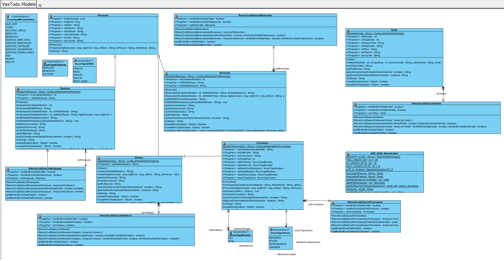Prototype of Assignment 1
-
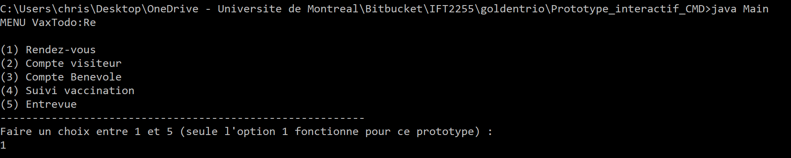
Main menu.
The user is prompted to select an option. -

The user is in the 'List of appointments' menu -

The user is in the 'Edit Appointment' menu -

The user is in the 'Appointment Change' menu and wants to change the appointment time.
He must choose the time of the appointment. -

The user is in the 'Appointment Change' menu and wants to change the appointment time.
He must choose the desired minute. -

The appointment time has been successfully changed.
Back to the previous menu.
Implementation
Prototype of duty 2 on the command line
-
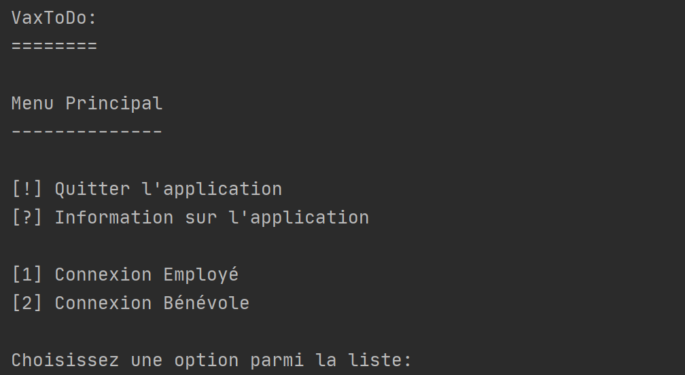
Login menu
The user is prompted to choose between employee and volunteer login. -
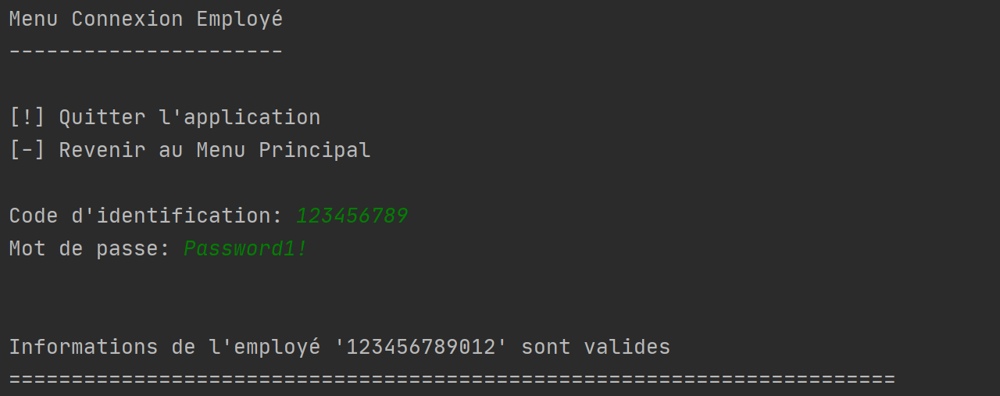
Employee login menu
The employee is prompted to enter their identification code and password. The system verifies that the data entered is in Data/Employes.csv. -
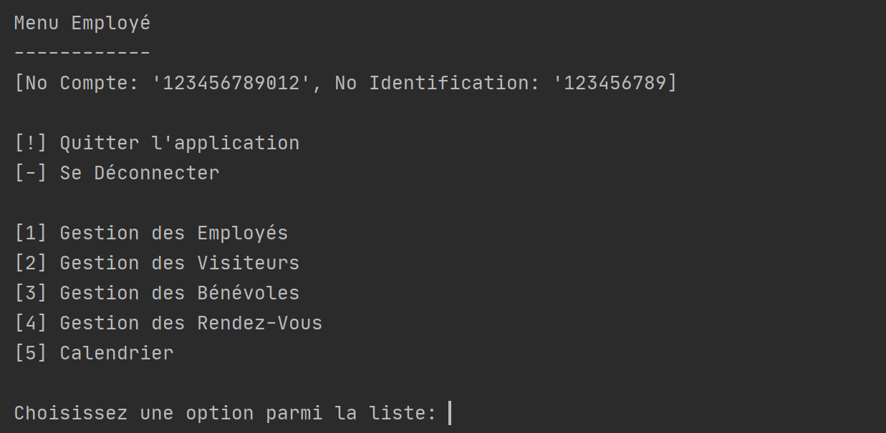
Employee Main Menu
The employee is prompted to select an option. The employee's account number and identification number are visible at the top. It can log out by entering "-" and exit the app with "!". -
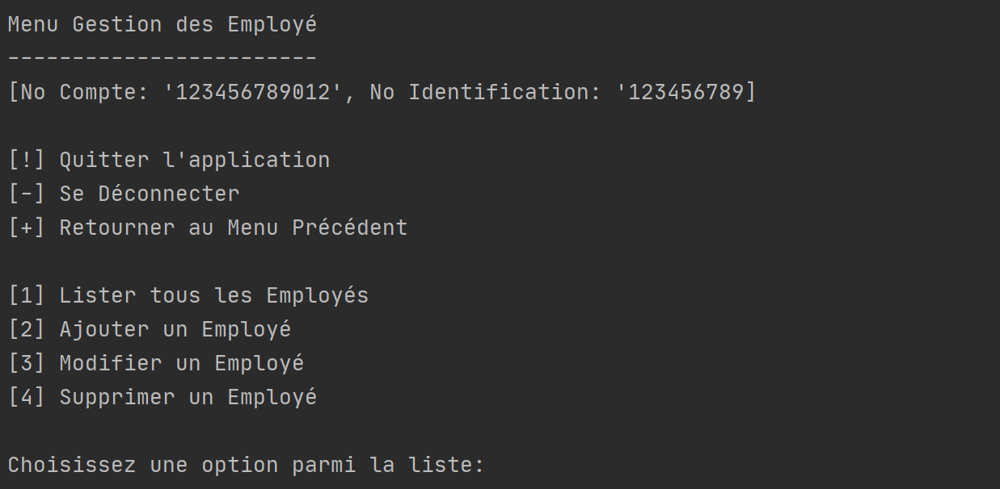
Employee Management Menu
The employee is prompted to select an option. It can go back by entering "+". -
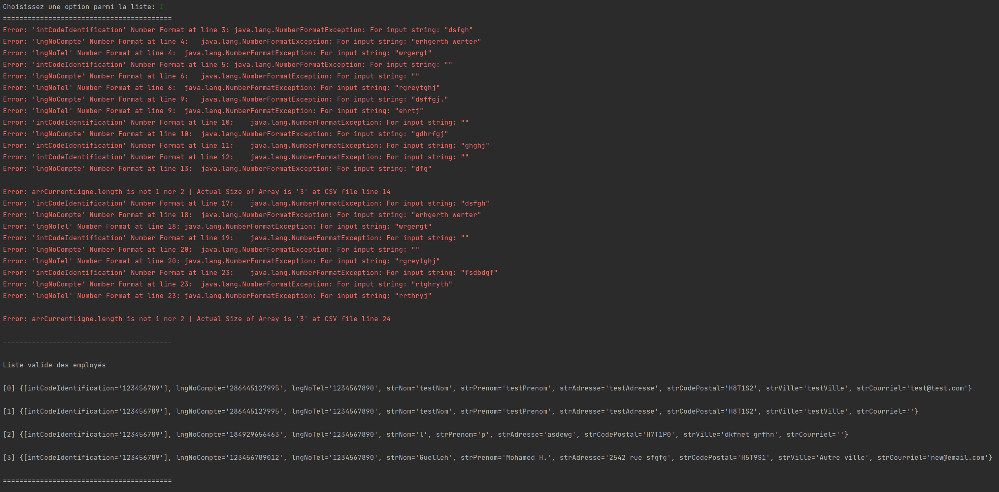
The employee enters "1" to choose the option list all employees.
The menu displays validation errors in case the data in the csv file does not follow the format (in red), and then the list of valid employees. -
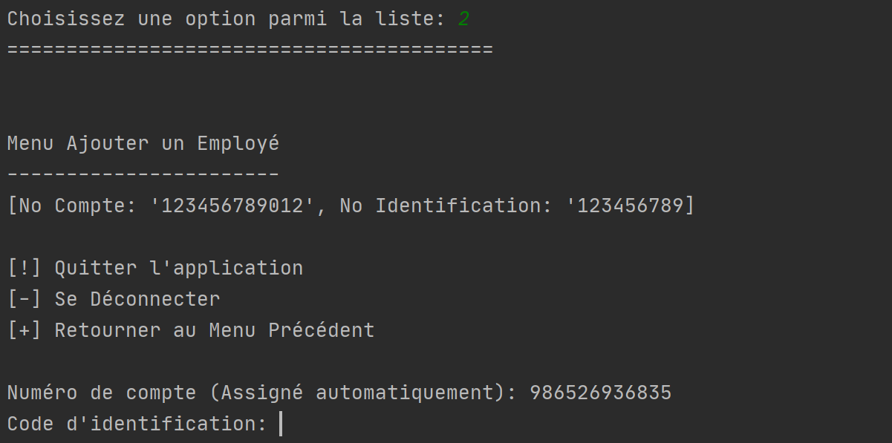
Add Employee
menu The employee is prompted to enter the new employee's identification code. The account number is generated automatically. He will then have to enter other information. -

Visitor management menu similar to that of volunteer management.
The employee is prompted to select an option. -
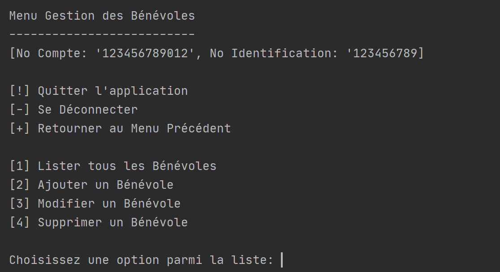
Volunteer management menu similar to that of visitor management.
The employee is prompted to select an option. -
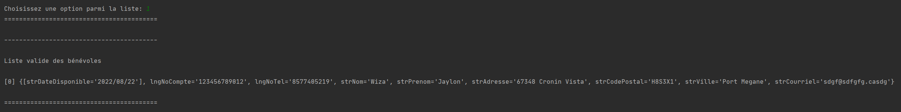
The employee enters "1" to choose the option list all employees.
The menu displays validation errors if the data in the csv file does not follow the format, and then the list of valid volunteers. -
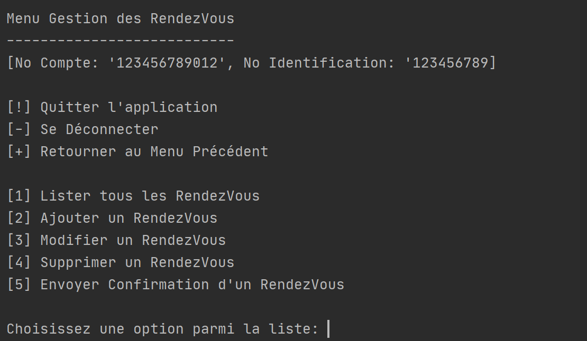
Appointment management menu similar to that of volunteer management.
The employee is prompted to select an option. -
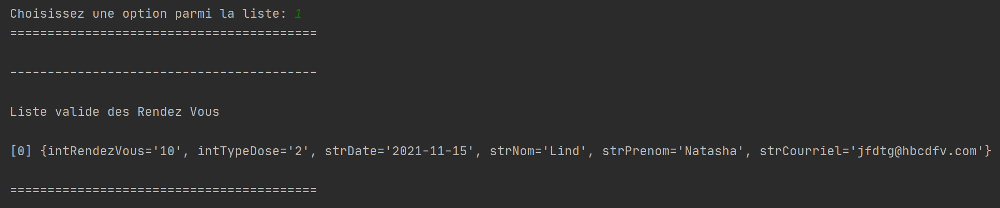
The employee enters "1" to choose the option to list all appointments.
The menu displays validation errors if the data in the csv file does not follow the format, and then the list of valid appointments. -
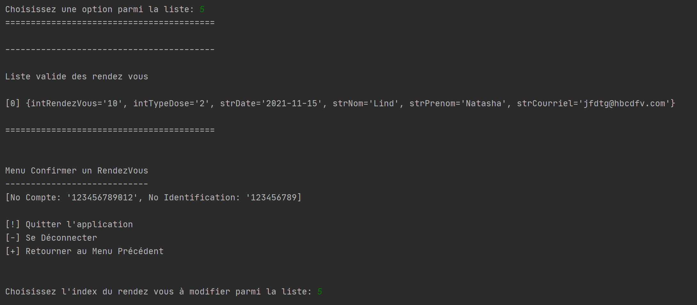
The employee enters "5" to choose the option to send an appointment confirmation.
The list of appointments is displayed and the employee is asked to select the appointment for which a confirmation must be sent. -
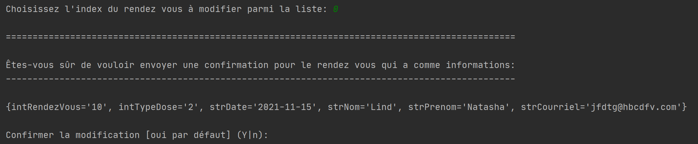
The system asks to confirm the sending of the appointment confirmation.
The employee is asked to select Y (yes) or n (no). -
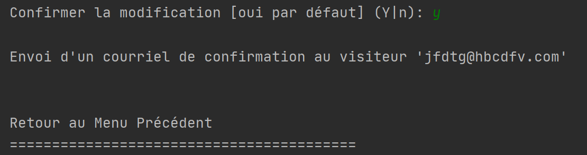
Confirmation of sending the appointment confirmation to the visitor's email address.
Back to the previous menu. -
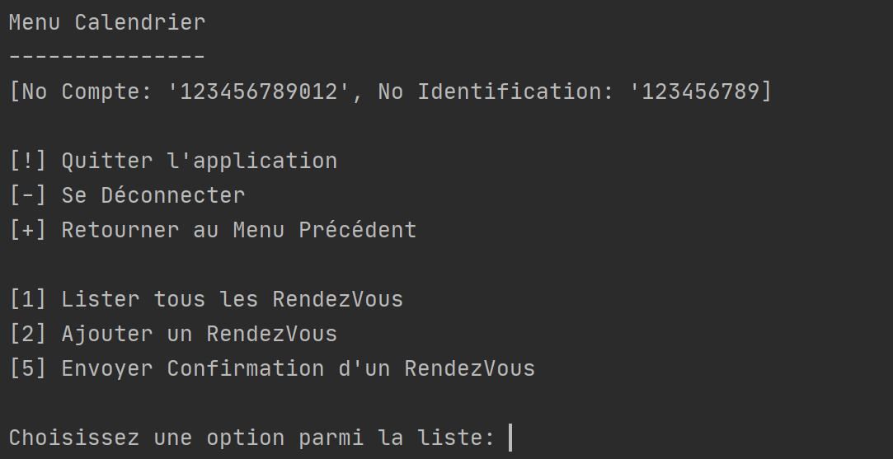
Calendar menu
The employee is prompted to select an option. -
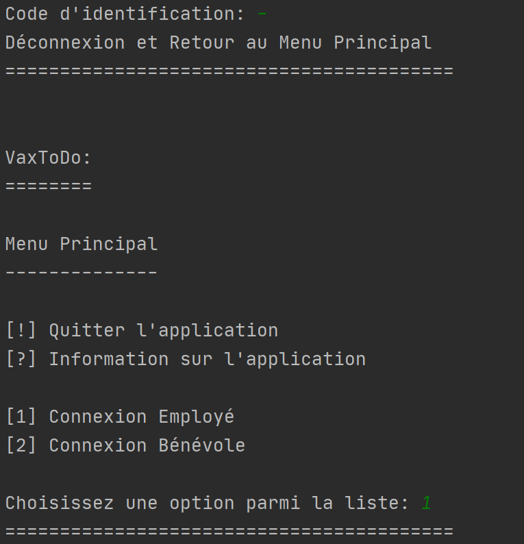
The employee enters "-" and is thus disconnected.
Back to the login menu. -
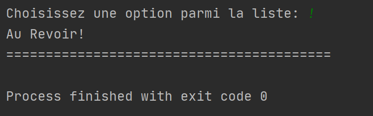
The employee enters "!" and exits the application.
Termination of the application.
Application with GUI in JavaFX
Unit tests
Screenshots of the six unit tests
-

Two tests for class AES_GCM_Athentification
Tests password encryption by testing that the encrypted password is not equal to the password entered in string and tests password decryption by testing that the decrypted password is equal to the password entered in string. -
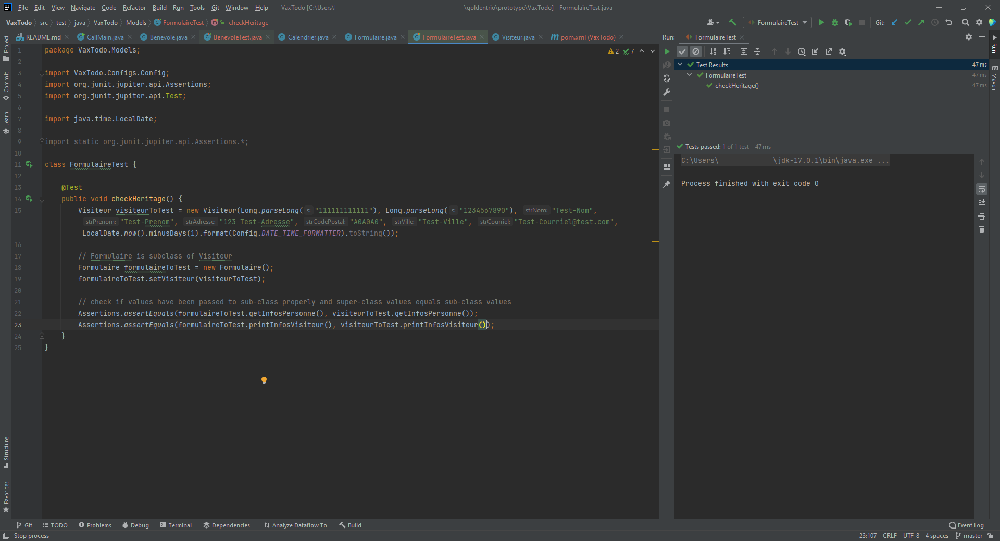
Two tests for the Form
class Tests that the values of the form have been correctly passed to the Subclass of type Visitor and tests that the values of the superclass of type Form are equal to those of the subclass of type Visitor. -
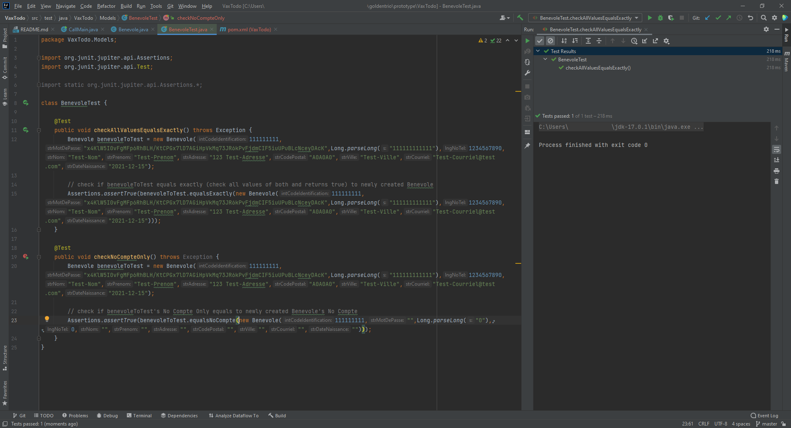
Two tests for the Benevole
class t Tests that a volunteer already created (benevoleToTest) has exactly the same values as a volunteer that we create on the spot and tests that if we enter only an account number for the volunteer created on the spot that is the same as that of benevoleToTest, their account numbers are equal.